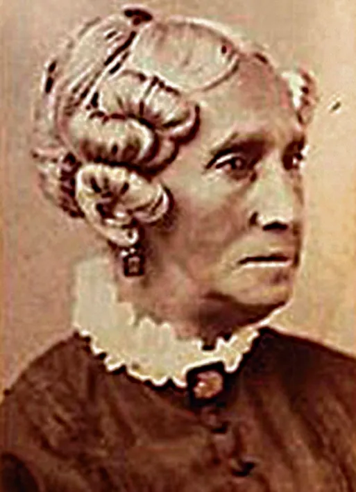

The Second Great Awakening

From the 1790s, a series of intense religious revivals took place on the western frontier, spreading throughout the country by the 1850s. This became known as the Second Great Awakening.
Main Features:
Large, emotional gatherings where people experienced conversion
Ordinary people claimed spiritual authority, not just ministers or elites
Methodists and Baptists surged ahead of older churches
Birth of new sects like the Mormons, Adventists, and Shakers
Events understood as signs of God's plan
Charles G. Finney
The Great Revivalist

Most responsible for bringing the awakening to the northern middle class
Theological Perspective
Arminian – Emphasized human free will in salvation, rejecting strict Calvinist predestination
Main Contributions:
- Personal conversion and revival meetings
- Active role of the Holy Spirit
- Christian perfectionism
- Deep involvement in abolitionism
- Vocal critic of Calvinist doctrines
"A revival is nothing else than a new beginning of obedience to God."
— Charles G. FinneyMass Revivals and Camp Meetings
Cane Ridge, Kentucky (1801)

Often cited as the most dramatic early revival
- Reports of 20,000 people attending
- Lasted for several days and nights
- People traveled hundreds of miles to attend
Key Characteristics:
- Itinerant preachers—especially Methodists and Baptists—took center stage
- Emotional displays: people "jerking," rolling on the ground, ecstatic singing, shouting
- Outdoor venues: Revivals were often outdoors because churches couldn't contain the crowds
- Multi-denominational cooperation in evangelistic efforts
Itinerant Preachers and "Circuit Riders"

Methodist ministers, usually young men, traveled vast circuits on horseback, bringing religion to frontier communities.
Their Appeal:
Simple messages: repentance, personal faith, conversion experience
Plain language: spoke with passion rather than polished theology
Accessible: reached ordinary people regardless of class or education
Democratization of Faith
Breaking Down Authority
- Decline of Clerical Authority – No need for formal education or established institutional authority to preach or lead
- Emphasized accessibility: anyone could testify, anyone could be converted
- Preaching became emotional, direct, and plainspoken rather than intellectual
- Rejection of Calvinist Predestination – Emphasis on individual choice and free will
Expanding Participation
Emerged as exhorters, prayer leaders, and spiritual guides—gaining religious authority despite limited political rights
Established vibrant churches, such as the AME, which grew to 20,000 members by 1850, expanding the SGA’s influence and supporting education and moral reform
Ordinary believers took active roles in worship, testimony, and church governance
Christianity became more participatory and emotional—broadening religious engagement to foster civic and moral cohesion among diverse groups, including women and African Americans
Come-Outer Sects
People dissatisfied with established churches left to form independent groups, rejecting traditional religious institutions for a more personal, direct relationship with God.
Key Characteristics
Religious Stance
- Rejection of established churches
- Emphasis on personal conversion
- Emotional religious experience
Social Impact
- Deep involvement in social reform
- Formation of new denominations
- Grassroots organizing
Implications:
- Religion was no longer dominated by elites in New England
- It spread west and south, transforming faith into a more grassroots, populist experience
- Created pathways for social activism through religious conviction
New Movements
The religious ferment produced entirely new movements, many uniquely American:

Founded by Joseph Smith in upstate New York's "Burned-Over District." Claimed new revelations—Book of Mormon, visions of angel Moroni. Emphasized restoration of true Christianity and millennial expectation. Faced persecution and moved westward.

Founded by Mother Ann Lee. Practiced celibacy and communal living. Emphasized equality of sexes and ecstatic worship with dancing. Known for exceptional craftsmanship, simple design, and utopian communities.

Emerged from William Miller's preaching about Christ's imminent return. Predicted Christ would return in 1844—"Great Disappointment" when He did not appear. Some followers reorganized as Seventh-day Adventists, emphasizing prophecy and health reform.
The Providential Worldview
Providential Worldview Defined:
Americans interpreted daily events and history itself as part of God's cosmic drama. Suffering, disasters, political changes—all read as divine signs and messages.
Examples in American Life:
Cholera epidemics seen as divine punishment or wake-up calls for moral reform
Westward expansion interpreted as God's plan—seeds of "Manifest Destiny"
Reform movements (temperance, abolition, women's rights) seen as fulfilling divine purpose
Consequences:
Ordinary Americans believed they were actors in a cosmic story.
The SGA’s providential worldview, embraced by diverse groups including African Americans, inspired Americans to see history as guided by divine purpose, motivating reforms like temperance and abolition as acts of national moral duty.
Respectability and Cultural Policing
Moral Gatekeeping
What Evangelicals Policed:
- Dance halls and social dancing
- Theater and dramatic performances
- Taverns and alcohol consumption
- Sunday activities (Sabbatarian laws)
- Reading material deemed immoral
Methods of Control:
- Sabbatarian laws restricting Sunday commerce
- Anti-theater campaigns and boycotts
- Moral reform societies
- Temperance movements
- Social pressure and community surveillance
Evangelicals promoted standards like temperance and Sabbath observance to foster self-discipline and community cohesion, values embraced by diverse groups, including African American congregations.
Significance of the Second Great Awakening
- Shattered Religious Complacency
Challenged established religious hierarchies and reinvigorated American Christianity with emotional vitality - Democratized Faith and Gave Authority to Ordinary People
Shifted spiritual power from educated clergy to common believers, making religion accessible to all classes - Birthed New Religious Movements
Created uniquely American denominations and sects that would shape national identity - Instilled Providential Worldview
Framed how Americans would interpret everything—from personal struggles to national destiny—as part of God's plan
The Second Great Awakening transformed not just American religion, but American culture, politics, and social reform movements for generations to come.
From Religious Revival to Social Reform
The Second Great Awakening didn't just change churches—it transformed American society
Temperance, abolitionism, women's rights, prison reform, education reform—all energized by evangelical Christianity
Emphasized self-improvement, moral discipline, and individual agency—personal transformation as path to social transformation
These same values would become the cultural markers of the emerging Northern middle class
Key Connection:
The SGA inspired reforms like temperance and abolition, which promoted moral discipline and civic responsibility across diverse groups, including African American leaders like Maria W. Stewart.
The Northern Middle Class

Economic Transformation
- Market Revolution created new towns and cities and transformed old ones
- Turned the rural North into a landscape of family-owned commercial farms
- Created opportunities for social mobility through entrepreneurship and trade
Who Comprised the New Middle Class?
Shopkeepers, traders, and commercial entrepreneurs connecting rural and urban economies
Artisans who transformed small workshops into larger manufacturing enterprises
Agricultural producers growing crops for commercial sale rather than subsistence
A new class defined not just by wealth, but by values of self-discipline, moral improvement, and economic ambition
A New Middle Class
New England played a disproportionate role in the making of middle-class culture—exporting Yankee values of work ethic, moral reform, and self-improvement throughout the North.
Liberty and Equality Redefined
Liberty
For the Yankee middle class, liberty meant self-ownership and the freedom of action and ambition.
- Freedom to pursue economic opportunity
- Independence from masters or patrons
- Self-made success through hard work
Equality
Equality meant equality of opportunity, not outcome.
- Everyone should have a fair chance
- Success depends on individual merit
- Hierarchy based on achievement, not birth
This redefinition would become fundamental to American capitalism and individualism—but also created tensions with ideas of communal obligation and structural inequality.
From Republican Motherhood to Cult of Domesticity
Republican Motherhood (1790s–1820s)
Women's civic duty centered on raising virtuous, educated sons to sustain the republic
- Political role expressed through motherhood
- Emphasized women's moral influence
- Required women's education
- Tied to Revolutionary ideals
The Rise of Separate Spheres
Industrialization and the Market Revolution divided public (male) and private (female) realms
- Men: market, politics, wage labor in public sphere
- Women: home, religion, moral nurture in private sphere
- Family became a moral refuge in an industrializing world

Cult of Domesticity (1830s–1850s)
Ideal of womanhood defined by four cardinal virtues:
- Piety
- Purity
- Domesticity
- Submission
Women positioned as moral anchors amid market chaos—guardians of virtue, not participants in politics or commerce.
Contradiction:
The Cult of Domesticity elevated women’s moral influence, fostering stable families that supported evangelical reforms and republican values.
Beyond the Cult of Domesticity
Class, Race, and Regional Realities
A Middle-Class Ideal
The Cult of Domesticity reflected the experiences of white, middle-class, northern women. It required leisure, literacy, and financial stability—privileges of class. Free Black and working-class women, while balancing economic roles, upheld moral leadership in their communities, contributing to the SGA’s broader impact.
Working-Class Women
- Entered factories, mills, and domestic service as wage earners
- Faced long hours (12-14 hour days), low pay, and little autonomy
- Could not afford to stay home as "moral guardians"
- Example: Lowell Mill Girls organized early labor protests (1830s–1840s), demanding better conditions


Maria W. Stewart
First American woman to lecture publicly on politics and women's rights (1832). Called for Black education and self-determination.
Sarah Mapps Douglass
Founded schools for Black children in Philadelphia. Active in abolitionist and women's rights movements.
The Cult of Domesticity: Conclusion
Who It Included
- White middle-class women
- Northern, educated women
- Those with economic security
- Women with leisure time
Who It Excluded
- Working-class women
- Immigrant women
- Free Black women
- Enslaved women
The language of virtue and woman's sphere defined class identity but excluded most women from its privileges.
What appeared as universal ideals of womanhood were actually markers of race, class, and regional privilege—used to distinguish "respectable" women from those deemed outside respectability's boundaries.
Domesticity and the Moral Household
The Home as "Moral Refuge"
Domestic space became sacred space—site of daily worship, moral instruction, and spiritual formation
Led prayer circles, organized Sunday schools, taught children scripture and hymns
Family devotions became daily rituals, with mother often leading

Cultural Influence
Domestic fiction and publications like Godey's Lady's Book extended moral influence, teaching proper domesticity
Gender and Class Distinctions:
Middle-class domestic ideals distinguished "respectable" women from working-class and immigrant women, who were often portrayed as morally suspect for working outside the home.
The "Cult of True Womanhood"
Four Cardinal Virtues
Piety
Women viewed as inherently more religious and moral than men. Spiritual guardians of the family who maintained household faith and morality.
Purity
Sexual virtue essential for women's moral authority. Purity was a reflection of character and the foundation of respectability. Loss of purity meant social ruin.
Submissiveness
A "true woman" was gentle, submissive, and acquiescent. Expected to defer to father and husband in all matters—strength shown through yielding.
Domesticity
Women's rightful domain was the home. Excellence in household management, child-rearing, and creating a moral refuge from the corrupt public world.
Note: Primarily a white middle-class ideal that did not reflect the lived reality of most American women.
Critical Question: How did this ideal both empower and restrict women?
It gave women moral authority and a sphere of influence, but it also confined them to the home and justified their exclusion from politics, higher education, and economic independence.